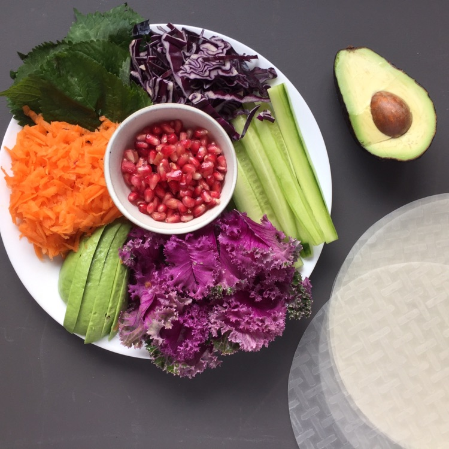

- 3 Tablespoons Tahini, unsalted
- 2 Tablespoons Pure maple syrup
- 2 Tablespoons Water
- 1 Tablespoon Extra virgin olive oil
- 1 Tablespoon Rice vinegar or apple cider vinegar
- 1 Tablespoon Fresh squeezed lemon juice
- 1 Teaspoon Tamari (or light soy if not gluten free)
- ½ Teaspoon Fine sea salt (omit if tahini is salted)
- ½ Inch knob ginger root, grated
Avocado Veggie Rainbow Rolls & Tangy Tahini Dipping Sauce
This is a crunchy, refreshing & surprisingly satisfying meal. It is gluten-free, dairy-free, nut-free & vegan too! Oh and super delicious 😋
Prep Time: 30 min

Ingredients
- 12 Rice papers
- 2 Avocados, pitted & sliced lengthwise
- 1 Cucumber, halved & cut 4x lengthwise
- 3 Carrots, peeled & grated
- 1 Bunch Kale, hard spine trimmed off
- 1 Bunch Purple cabbage, shredded
- Pomegranate arils as needed
- Pea shoots or microgreens as needed
- 14 Perilla leaves (or basil leaves)
For the rainbow rolls (makes 12):
- Step 1
- Step 2 
- Step 3
- Step 4
- Step 5
- Step 6
- Step 7
- Step 8
- Step 9
- Step 10
- Step 11
Steps

Make the sauce by putting all the sauce ingredients into a blender and give it a few whizzes to thoroughly combine. Pour into dipping bowls. Set aside. The recipe makes about 1/2 cup of sauce, which is plenty. Even with my aggressive dunking there is normally leftover for salad on another day.
Prepare (wash, trim) avocado and all the veggies you want to use in your rolls. Cut things small and somewhat long in shape, or grate it. It makes rolling a lot easier. Very thin & flexible items like the dark green perilla leaves pictured (or kale for example) roll easily if you trim off the spine.

In terms of the rice paper, don't confuse them with "spring roll" wrappers, even though some people call these types of rolls "rainbow spring rolls". They are NOT the same thing! The ingredients should be rice, salt & water. They are hard & brittle and require a quick soak in warm water before using

First soak one rice paper in warm water. I like heated kettle water say, the temperature of a warm shower. Soak for ~25-30 sec. Keep feeling it. It should be pliable but not soggy - it softens a bit more as you pile on the fillings. I like to start with soft leaves & avo, and continue from there.

Load it on! You'll figure out quickly what is too little (limp looking rolls) and what is too much (the rice paper rips). Get creative with your fillings..besides veggies, tofu & cooked vermicelli noodles are terrific too!

1.Flip bottom partway up 2.Using hands on both sides, roll up while gently squeezing & tucking the rice paper under the filling 3.Press down to prevent filling from shifting and 4.flip up the end to secure. Repeat other side 5.Continue rolling with same gentle squeeze-tuck 6.Roll rest of the way up

Ta-da!

Using a very sharp knife, cut roll into 2 pieces.

So pretty! Ignoring the cartoon bandaid on my thumb 🤓
Here is a video of me rolling one from start to finish in real time...not! 😅

Dip dip dip away! The tahini sauce is hella good. I hope you enjoy it too :)